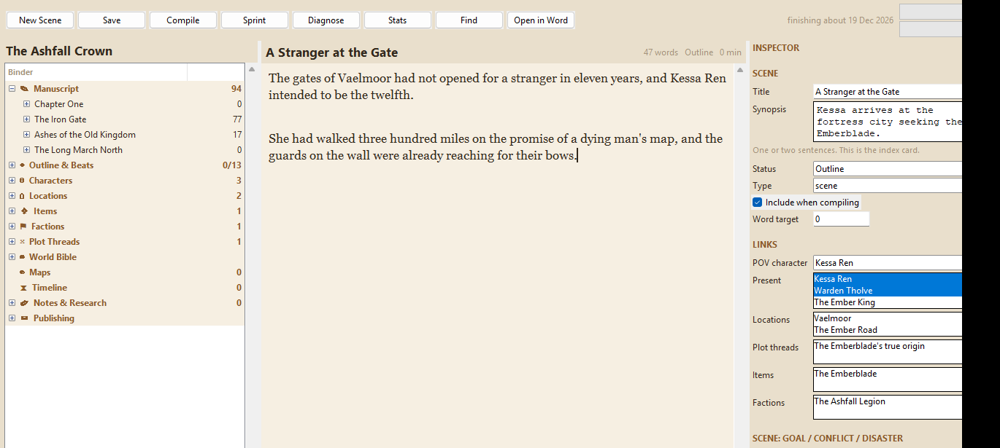
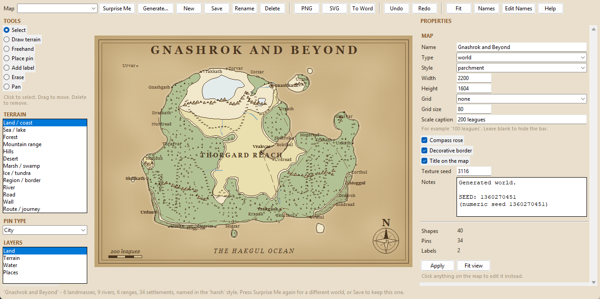
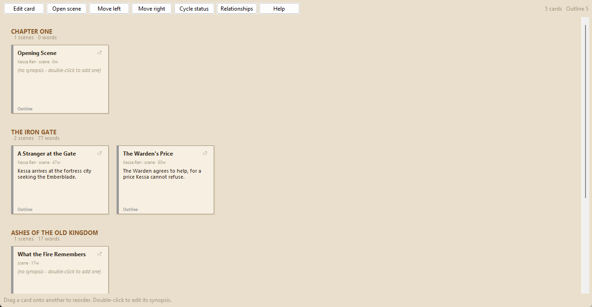
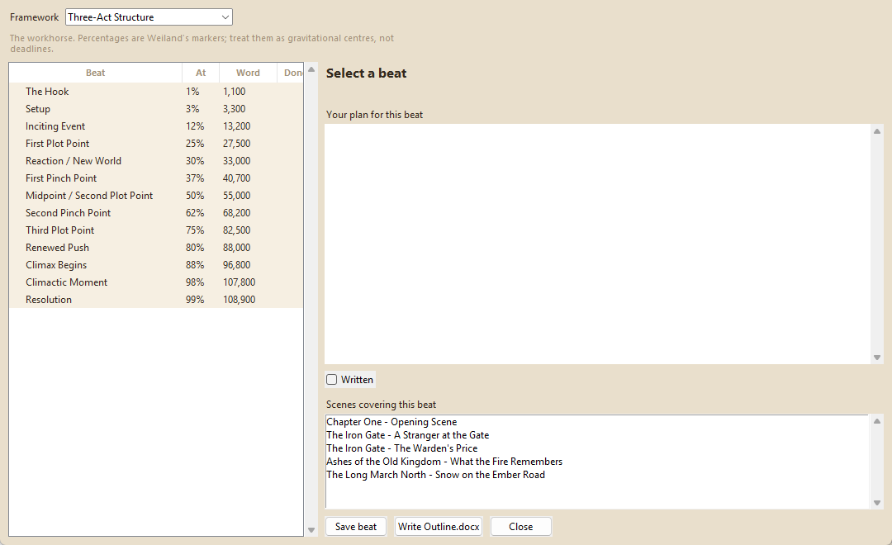

NovelForge is a free novel-writing studio for Windows. Every single thing it creates — every scene, every character sheet, every map — is a real Microsoft Word document, sitting in a folder on your own disk.
Free forever. No account, no telemetry, no internet connection required.

Most novelists piece this together from five different apps. NovelForge bundles it into one that opens in about a second.

Press "Surprise Me" for a complete world — coastlines, kingdoms, rivers, roads, dozens of named settlements — built from the system's own randomness. Every world remembers its seed, so one you like can be regenerated exactly. Prefer to draw it yourself? Freehand coastlines, 13 terrain types and 20 pin types are there too.

Every scene as an index card, grouped by chapter, colour-coded by status. Drag a card onto another to reorder it, or onto a chapter heading to move it there. This is the fastest way to outline, because you can see everything at once.

Three-Act, Save the Cat, Snowflake, Seven-Point, Story Circle, Hero's Journey, Romancing the Beat, Mystery/Crime, Freytag. Each beat shows the word position it should land at, calculated from your own target length. Try one, switch to another — nothing is lost.
Free, from python.org — tick "Add python.exe to PATH" during setup. One-time, a couple of minutes.
Grab the latest release from GitHub and unzip it anywhere on your PC — your Desktop or Documents folder is fine.
That's it. It finds Python on its own and opens straight into
the app. File → New Novel... to begin.
NovelForge's engine is plain Python, but its interface is built with Tkinter and has only ever been tested on Windows. macOS/Linux support is a real possibility, not a promise — open an issue if that's what would get you using it.
No subscription, no paywalled features. If NovelForge is useful to you, a donation is welcome but never expected.